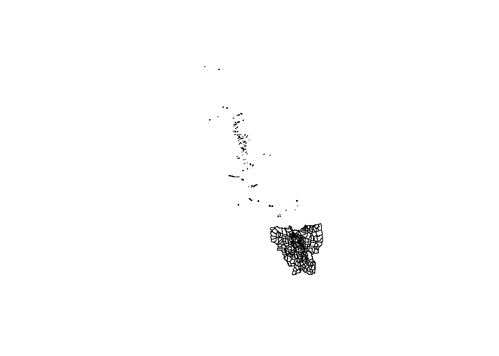
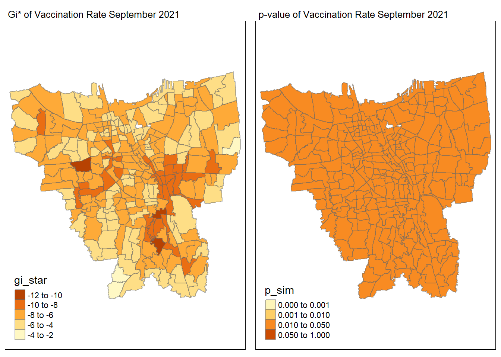
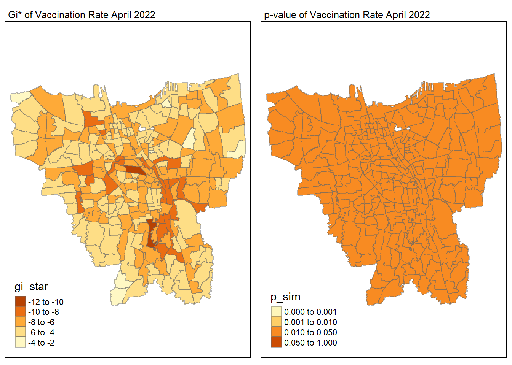

pacman::p_load(sf, tmap, tidyverse, sfdep, readxl, Kendall, plotly, plyr)Take-Home Exercise 2: Spatio-temporal Analysis of COVID-19 Vaccination Trends at the Sub-district Level, DKI Jakarta
1 Introduction
1.1 Background
Since late December 2019, an outbreak of a novel coronavirus disease (COVID-19; previously known as 2019-nCoV) was reported in Wuhan, China, which had subsequently affected 210 countries worldwide. In general, COVID-19 is an acute resolved disease but it can also be deadly, with a 2% case fatality rate.
The COVID-19 vaccination in Indonesia is an ongoing mass immunisation in response to the COVID-19 pandemic in Indonesia. On 13 January 2021, the program commenced when President Joko Widodo was vaccinated at the presidential palace. In terms of total doses given, Indonesia ranks third in Asia and fifth in the world.
According to wikipedia, as of 5 February 2023 at 18:00 WIB (UTC+7), 204,266,655 people had received the first dose of the vaccine and 175,131,893 people had been fully vaccinated; 69,597,474 of them had been inoculated with the booster or the third dose, while 1,585,164 had received the fourth dose. Jakarta has the highest percentage of population fully vaccinated with 103.46%, followed by Bali and Special Region of Yogyakarta with 85.45% and 83.02% respectively.
Despite its compactness, the cumulative vaccination rate are not evenly distributed within DKI Jakarta. The question is where are the sub-districts with relatively higher number of vaccination rate and how they changed over time.
1.2 Objectives
Exploratory Spatial Data Analysis (ESDA) hold tremendous potential to address complex problems facing society. In this study, you are tasked to apply appropriate Local Indicators of Spatial Association (LISA) and Emerging Hot Spot Analysis (EHSA) to undercover the spatio-temporal trends of COVID-19 vaccination in DKI Jakarta.
1.3 The Task
Choropleth Mapping and Analysis
Compute the monthly vaccination rate from July 2021 to June 2022 at sub-district level
Prepare the monthly vaccination rate maps by using appropriate tmap functions
Describe the spatial patterns revealed by the choropleth maps (not more than 200 words)
Local Gi* Analysis
Compute local Gi* values of the monthly vaccination rate
Display the Gi* maps of the monthly vaccination rate. The maps should only display the significant (i.e. p-value < 0.05)
With reference to the analysis results, draw statistical conclusions (not more than 250 words)
Emerging Hot Spot Analysis (EHSA)
Perform Mann-Kendall Test by using the spatio-temporal local Gi* values
Select three sub-districts and describe the temporal trends revealed (not more than 250 words)
Prepare a EHSA map of the Gi* values of vaccination rate. The maps should only display the significant (i.e. p-value < 0.05)
With reference to the EHSA map prepared, describe the spatial patterns revealed (not more than 250 words)
2 Getting Started
2.1 Importing Modules
The following R packages will be used for this analysis:
tidyverse - Used for data science tasks
tmap - Used for creating thematic maps
sf - Used for importing, managing and processing geospatial data
sfdep - Used for geometry neighbours and local indicators of spatial association
readxl: Used to read Excel into R
kendall - Used for Mann-Kendall Test
plotly - Used for interactive graphs
plyr - Used for functions
2.2 Geospatial Data
2.2.1 Importing Data
geoJAR <- st_read(dsn = "data/geospatial/",
layer = "BATAS_DESA_DESEMBER_2019_DUKCAPIL_DKI_JAKARTA") %>%
st_transform(crs=26392)Reading layer `BATAS_DESA_DESEMBER_2019_DUKCAPIL_DKI_JAKARTA' from data source
`C:\Users\la935\Desktop\IS415 - GAA\IS415 - GAA (New)\Take-Home_Ex\Take-Home_Ex02\data\geospatial'
using driver `ESRI Shapefile'
Simple feature collection with 269 features and 161 fields
Geometry type: MULTIPOLYGON
Dimension: XY
Bounding box: xmin: 106.3831 ymin: -6.370815 xmax: 106.9728 ymax: -5.184322
Geodetic CRS: WGS 842.2.2 Data Pre-Processing
2.2.2.1 Remove Missing Values
geoJAR[rowSums(is.na(geoJAR))!=0,]Simple feature collection with 2 features and 161 fields
Geometry type: MULTIPOLYGON
Dimension: XY
Bounding box: xmin: 16026250 ymin: -16069470 xmax: 16036970 ymax: -16060460
Projected CRS: Minna / Nigeria Mid Belt
OBJECT_ID KODE_DESA DESA KODE PROVINSI KAB_KOTA KECAMATAN
243 25645 31888888 DANAU SUNTER 318888 DKI JAKARTA <NA> <NA>
244 25646 31888888 DANAU SUNTER DLL 318888 DKI JAKARTA <NA> <NA>
DESA_KELUR JUMLAH_PEN JUMLAH_KK LUAS_WILAY KEPADATAN PERPINDAHA JUMLAH_MEN
243 <NA> 0 0 0 0 0 0
244 <NA> 0 0 0 0 0 0
PERUBAHAN WAJIB_KTP SILAM KRISTEN KHATOLIK HINDU BUDHA KONGHUCU KEPERCAYAA
243 0 0 0 0 0 0 0 0 0
244 0 0 0 0 0 0 0 0 0
PRIA WANITA BELUM_KAWI KAWIN CERAI_HIDU CERAI_MATI U0 U5 U10 U15 U20 U25
243 0 0 0 0 0 0 0 0 0 0 0 0
244 0 0 0 0 0 0 0 0 0 0 0 0
U30 U35 U40 U45 U50 U55 U60 U65 U70 U75 TIDAK_BELU BELUM_TAMA TAMAT_SD SLTP
243 0 0 0 0 0 0 0 0 0 0 0 0 0 0
244 0 0 0 0 0 0 0 0 0 0 0 0 0 0
SLTA DIPLOMA_I DIPLOMA_II DIPLOMA_IV STRATA_II STRATA_III BELUM_TIDA
243 0 0 0 0 0 0 0
244 0 0 0 0 0 0 0
APARATUR_P TENAGA_PEN WIRASWASTA PERTANIAN NELAYAN AGAMA_DAN PELAJAR_MA
243 0 0 0 0 0 0 0
244 0 0 0 0 0 0 0
TENAGA_KES PENSIUNAN LAINNYA GENERATED KODE_DES_1 BELUM_ MENGUR_ PELAJAR_
243 0 0 0 <NA> <NA> 0 0 0
244 0 0 0 <NA> <NA> 0 0 0
PENSIUNA_1 PEGAWAI_ TENTARA KEPOLISIAN PERDAG_ PETANI PETERN_ NELAYAN_1
243 0 0 0 0 0 0 0 0
244 0 0 0 0 0 0 0 0
INDUSTR_ KONSTR_ TRANSP_ KARYAW_ KARYAW1 KARYAW1_1 KARYAW1_12 BURUH BURUH_
243 0 0 0 0 0 0 0 0 0
244 0 0 0 0 0 0 0 0 0
BURUH1 BURUH1_1 PEMBANT_ TUKANG TUKANG_1 TUKANG_12 TUKANG__13 TUKANG__14
243 0 0 0 0 0 0 0 0
244 0 0 0 0 0 0 0 0
TUKANG__15 TUKANG__16 TUKANG__17 PENATA PENATA_ PENATA1_1 MEKANIK SENIMAN_
243 0 0 0 0 0 0 0 0
244 0 0 0 0 0 0 0 0
TABIB PARAJI_ PERANCA_ PENTER_ IMAM_M PENDETA PASTOR WARTAWAN USTADZ JURU_M
243 0 0 0 0 0 0 0 0 0 0
244 0 0 0 0 0 0 0 0 0 0
PROMOT ANGGOTA_ ANGGOTA1 ANGGOTA1_1 PRESIDEN WAKIL_PRES ANGGOTA1_2
243 0 0 0 0 0 0 0
244 0 0 0 0 0 0 0
ANGGOTA1_3 DUTA_B GUBERNUR WAKIL_GUBE BUPATI WAKIL_BUPA WALIKOTA WAKIL_WALI
243 0 0 0 0 0 0 0 0
244 0 0 0 0 0 0 0 0
ANGGOTA1_4 ANGGOTA1_5 DOSEN GURU PILOT PENGACARA_ NOTARIS ARSITEK AKUNTA_
243 0 0 0 0 0 0 0 0 0
244 0 0 0 0 0 0 0 0 0
KONSUL_ DOKTER BIDAN PERAWAT APOTEK_ PSIKIATER PENYIA_ PENYIA1 PELAUT
243 0 0 0 0 0 0 0 0 0
244 0 0 0 0 0 0 0 0 0
PENELITI SOPIR PIALAN PARANORMAL PEDAGA_ PERANG_ KEPALA_ BIARAW_ WIRASWAST_
243 0 0 0 0 0 0 0 0 0
244 0 0 0 0 0 0 0 0 0
LAINNYA_12 LUAS_DESA KODE_DES_3 DESA_KEL_1 KODE_12
243 0 0 <NA> <NA> 0
244 0 0 <NA> <NA> 0
geometry
243 MULTIPOLYGON (((16026561 -1...
244 MULTIPOLYGON (((16030782 -1...geoJAR <- na.omit(geoJAR,c("DESA_KELUR"))2.2.2.2 Transform Coordinate System
st_crs(geoJAR)Coordinate Reference System:
User input: EPSG:26392
wkt:
PROJCRS["Minna / Nigeria Mid Belt",
BASEGEOGCRS["Minna",
DATUM["Minna",
ELLIPSOID["Clarke 1880 (RGS)",6378249.145,293.465,
LENGTHUNIT["metre",1]]],
PRIMEM["Greenwich",0,
ANGLEUNIT["degree",0.0174532925199433]],
ID["EPSG",4263]],
CONVERSION["Nigeria Mid Belt",
METHOD["Transverse Mercator",
ID["EPSG",9807]],
PARAMETER["Latitude of natural origin",4,
ANGLEUNIT["degree",0.0174532925199433],
ID["EPSG",8801]],
PARAMETER["Longitude of natural origin",8.5,
ANGLEUNIT["degree",0.0174532925199433],
ID["EPSG",8802]],
PARAMETER["Scale factor at natural origin",0.99975,
SCALEUNIT["unity",1],
ID["EPSG",8805]],
PARAMETER["False easting",670553.98,
LENGTHUNIT["metre",1],
ID["EPSG",8806]],
PARAMETER["False northing",0,
LENGTHUNIT["metre",1],
ID["EPSG",8807]]],
CS[Cartesian,2],
AXIS["(E)",east,
ORDER[1],
LENGTHUNIT["metre",1]],
AXIS["(N)",north,
ORDER[2],
LENGTHUNIT["metre",1]],
USAGE[
SCOPE["Engineering survey, topographic mapping."],
AREA["Nigeria between 6°30'E and 10°30'E, onshore and offshore shelf."],
BBOX[3.57,6.5,13.53,10.51]],
ID["EPSG",26392]]geoJAR23845 <- st_transform(geoJAR, 23845)st_crs(geoJAR23845)Coordinate Reference System:
User input: EPSG:23845
wkt:
PROJCRS["DGN95 / Indonesia TM-3 zone 54.1",
BASEGEOGCRS["DGN95",
DATUM["Datum Geodesi Nasional 1995",
ELLIPSOID["WGS 84",6378137,298.257223563,
LENGTHUNIT["metre",1]]],
PRIMEM["Greenwich",0,
ANGLEUNIT["degree",0.0174532925199433]],
ID["EPSG",4755]],
CONVERSION["Indonesia TM-3 zone 54.1",
METHOD["Transverse Mercator",
ID["EPSG",9807]],
PARAMETER["Latitude of natural origin",0,
ANGLEUNIT["degree",0.0174532925199433],
ID["EPSG",8801]],
PARAMETER["Longitude of natural origin",139.5,
ANGLEUNIT["degree",0.0174532925199433],
ID["EPSG",8802]],
PARAMETER["Scale factor at natural origin",0.9999,
SCALEUNIT["unity",1],
ID["EPSG",8805]],
PARAMETER["False easting",200000,
LENGTHUNIT["metre",1],
ID["EPSG",8806]],
PARAMETER["False northing",1500000,
LENGTHUNIT["metre",1],
ID["EPSG",8807]]],
CS[Cartesian,2],
AXIS["easting (X)",east,
ORDER[1],
LENGTHUNIT["metre",1]],
AXIS["northing (Y)",north,
ORDER[2],
LENGTHUNIT["metre",1]],
USAGE[
SCOPE["Cadastre."],
AREA["Indonesia - onshore east of 138°E."],
BBOX[-9.19,138,-1.49,141.01]],
ID["EPSG",23845]]2.2.3 Data Visualisation
plot(st_geometry(geoJAR23845))
2.2.3.1 Retain Relavant Columns
geoJAR23845 <- geoJAR23845 %>%
dplyr::select(c(1:9))2.2.3.2 Removing Outer Islands
jar_main <- geoJAR23845 %>%
filter(KAB_KOTA %in%
c("JAKARTA BARAT",
"JAKARTA PUSAT",
"JAKARTA UTARA",
"JAKARTA SELATAN",
"JAKARTA TIMUR"))2.2.3.3 Renaming Columns
jar_main <- jar_main %>%
dplyr::rename(
Object_Id = OBJECT_ID,
Province = PROVINSI,
City = KAB_KOTA,
District = KECAMATAN,
Village_Code = KODE_DESA,
Village = DESA,
Sub_District = DESA_KELUR,
Code = KODE,
Total_Population = JUMLAH_PEN
)glimpse(jar_main)Rows: 261
Columns: 10
$ Object_Id <dbl> 25477, 25478, 25397, 25400, 25390, 25391, 25394, 2538…
$ Village_Code <chr> "3173031006", "3173031007", "3171031003", "3171031006…
$ Village <chr> "KEAGUNGAN", "GLODOK", "HARAPAN MULIA", "CEMPAKA BARU…
$ Code <dbl> 317303, 317303, 317103, 317103, 317102, 317102, 31710…
$ Province <chr> "DKI JAKARTA", "DKI JAKARTA", "DKI JAKARTA", "DKI JAK…
$ City <chr> "JAKARTA BARAT", "JAKARTA BARAT", "JAKARTA PUSAT", "J…
$ District <chr> "TAMAN SARI", "TAMAN SARI", "KEMAYORAN", "KEMAYORAN",…
$ Sub_District <chr> "KEAGUNGAN", "GLODOK", "HARAPAN MULIA", "CEMPAKA BARU…
$ Total_Population <dbl> 21609, 9069, 29085, 41913, 15793, 33383, 35906, 21828…
$ geometry <MULTIPOLYGON [m]> MULTIPOLYGON (((-3627004 69..., MULTIPOL…2.2.3.4 Checking Map
tm_shape(jar_main) +
tm_polygons("City")
2.3 Aspatial Data
2.3.1 Importing Data
2.3.1.1 Jul 2021
jul2021 <- read_xlsx("data/aspatial/Data Vaksinasi Berbasis Kelurahan (31 Juli 2021).xlsx")2.3.1.2 Aug 2021
aug2021 <- read_xlsx("data/aspatial/Data Vaksinasi Berbasis Kelurahan (31 Agustus 2021).xlsx")2.3.1.3 Sep 2021
sep2021 <- read_xlsx("data/aspatial/Data Vaksinasi Berbasis Kelurahan (30 September 2021).xlsx")2.3.1.4 Oct 2021
oct2021 <- read_xlsx("data/aspatial/Data Vaksinasi Berbasis Kelurahan (31 Oktober 2021).xlsx")2.3.1.5 Nov 2021
nov2021 <- read_xlsx("data/aspatial/Data Vaksinasi Berbasis Kelurahan (30 November 2021).xlsx")2.3.1.6 Dec 2021
dec2021 <- read_xlsx("data/aspatial/Data Vaksinasi Berbasis Kelurahan (31 Desember 2021).xlsx")2.3.1.7 Jan 2022
jan2022 <- read_xlsx("data/aspatial/Data Vaksinasi Berbasis Kelurahan (31 Januari 2022).xlsx")2.3.1.8 Feb 2022
feb2022 <- read_xlsx("data/aspatial/Data Vaksinasi Berbasis Kelurahan (27 Februari 2022).xlsx")2.3.1.9 Mar 2022
mar2022 <- read_xlsx("data/aspatial/Data Vaksinasi Berbasis Kelurahan (31 Maret 2022).xlsx")2.3.1.10 Apr 2022
apr2022 <- read_xlsx("data/aspatial/Data Vaksinasi Berbasis Kelurahan (30 April 2022).xlsx")2.3.1.11 May 2022
may2022 <- read_xlsx("data/aspatial/Data Vaksinasi Berbasis Kelurahan (31 Mei 2022).xlsx")2.3.1.12 June 2022
jun2022 <- read_xlsx("data/aspatial/Data Vaksinasi Berbasis Kelurahan (30 Juni 2022).xlsx")2.3.2 Creation of Pre-Processing Function & Keeping Relevant Columns
aspatial_preprocess <- function(filepath){
result <- read_xlsx(filepath)[-1,]
startpoint <- gregexpr(pattern="Kelurahan", filepath)[[1]] + 11
result$Date <- substr(filepath, startpoint, nchar(filepath)-6)
result <- result %>%
select("Date",
"KODE KELURAHAN",
"KELURAHAN",
"SASARAN",
"BELUM VAKSIN")
return(result)
}2.3.3 Applying Function to All Data Files
file_list <-list.files(path = "data/aspatial", pattern = "*.xlsx", full.names=TRUE)
df_list <- lapply(seq_along(file_list), function(x) aspatial_preprocess(file_list[x]))vaccination_jakarta <- ldply(df_list, data.frame)glimpse(vaccination_jakarta)Rows: 3,204
Columns: 5
$ Date <chr> "27 Februari 2022", "27 Februari 2022", "27 Februari 20…
$ KODE.KELURAHAN <chr> "3172051003", "3173041007", "3175041005", "3175031003",…
$ KELURAHAN <chr> "ANCOL", "ANGKE", "BALE KAMBANG", "BALI MESTER", "BAMBU…
$ SASARAN <dbl> 23947, 29381, 29074, 9752, 26285, 21566, 23886, 47898, …
$ BELUM.VAKSIN <dbl> 4592, 5319, 5903, 1649, 4030, 3950, 3344, 9382, 3772, 7…2.3.4 Formatting Date Column
# Set locale to Indonesia
Sys.setlocale(locale="ind")[1] "LC_COLLATE=Indonesian_Indonesia.1252;LC_CTYPE=Indonesian_Indonesia.1252;LC_MONETARY=Indonesian_Indonesia.1252;LC_NUMERIC=C;LC_TIME=Indonesian_Indonesia.1252"vaccination_jakarta$Date <- c(vaccination_jakarta$Date) %>%
as.Date(vaccination_jakarta$Date, format ="%d %B %Y")
glimpse(vaccination_jakarta)Rows: 3,204
Columns: 5
$ Date <date> 2022-02-27, 2022-02-27, 2022-02-27, 2022-02-27, 2022-0~
$ KODE.KELURAHAN <chr> "3172051003", "3173041007", "3175041005", "3175031003",~
$ KELURAHAN <chr> "ANCOL", "ANGKE", "BALE KAMBANG", "BALI MESTER", "BAMBU~
$ SASARAN <dbl> 23947, 29381, 29074, 9752, 26285, 21566, 23886, 47898, ~
$ BELUM.VAKSIN <dbl> 4592, 5319, 5903, 1649, 4030, 3950, 3344, 9382, 3772, 7~2.3.5 Renaming Columns to English
vaccination_jakarta <- vaccination_jakarta %>%
dplyr::rename(
Date = Date,
Sub_District_Code = KODE.KELURAHAN,
Sub_District = KELURAHAN,
Target = SASARAN,
Not_Yet_Vaccinated = BELUM.VAKSIN
)glimpse(vaccination_jakarta)Rows: 3,204
Columns: 5
$ Date <date> 2022-02-27, 2022-02-27, 2022-02-27, 2022-02-27, 20~
$ Sub_District_Code <chr> "3172051003", "3173041007", "3175041005", "31750310~
$ Sub_District <chr> "ANCOL", "ANGKE", "BALE KAMBANG", "BALI MESTER", "B~
$ Target <dbl> 23947, 29381, 29074, 9752, 26285, 21566, 23886, 478~
$ Not_Yet_Vaccinated <dbl> 4592, 5319, 5903, 1649, 4030, 3950, 3344, 9382, 377~2.3.6 Check for Missing Values
vaccination_jakarta[rowSums(is.na(vaccination_jakarta))!=0,][1] Date Sub_District_Code Sub_District Target
[5] Not_Yet_Vaccinated
<0 rows> (or 0-length row.names)3 Geospatial x Aspatial Integration
3.1 Joining of Geospatial & Aspatial Data
colnames(jar_main) [1] "Object_Id" "Village_Code" "Village" "Code"
[5] "Province" "City" "District" "Sub_District"
[9] "Total_Population" "geometry" colnames(vaccination_jakarta)[1] "Date" "Sub_District_Code" "Sub_District"
[4] "Target" "Not_Yet_Vaccinated"combined_jakarta <- left_join(jar_main, vaccination_jakarta,
by=c(
"Village_Code"="Sub_District_Code",
"Sub_District"="Sub_District")
)colnames(combined_jakarta) [1] "Object_Id" "Village_Code" "Village"
[4] "Code" "Province" "City"
[7] "District" "Sub_District" "Total_Population"
[10] "Date" "Target" "Not_Yet_Vaccinated"
[13] "geometry" 3.2 Combined Jakarta Visualisation
total_population = tm_shape(combined_jakarta)+
tm_fill("Total_Population") +
tm_borders(alpha = 0.5) +
tm_layout(main.title="Total Population Count")
target = tm_shape(combined_jakarta)+
tm_fill("Target") +
tm_borders(alpha = 0.5) +
tm_layout(main.title="Target Count")
not_yet_vaccinated = tm_shape(combined_jakarta)+
tm_fill("Not_Yet_Vaccinated") +
tm_borders(alpha = 0.5) +
tm_layout(main.title="Not Yet Vaccinated Count")
tmap_arrange(total_population, target, not_yet_vaccinated)3.3 Checking for Missing Values
jar_main[rowSums(is.na(jar_main))!=0,]Simple feature collection with 0 features and 9 fields
Bounding box: xmin: NA ymin: NA xmax: NA ymax: NA
Projected CRS: DGN95 / Indonesia TM-3 zone 54.1
[1] Object_Id Village_Code Village Code
[5] Province City District Sub_District
[9] Total_Population geometry
<0 rows> (or 0-length row.names)vaccination_jakarta[rowSums(is.na(vaccination_jakarta))!=0,][1] Date Sub_District_Code Sub_District Target
[5] Not_Yet_Vaccinated
<0 rows> (or 0-length row.names)3.4 Checking for Mismatched Data
jakarta_sd <- c(jar_main$Sub_District)
vaccination_sd <- c(vaccination_jakarta$Sub_District)3.4.1 Checks for Unique Sub-District in Geospatial Data
unique(jakarta_sd[!(jakarta_sd %in% vaccination_sd)])[1] "KRENDANG" "RAWAJATI" "TENGAH"
[4] "BALEKAMBANG" "PINANGRANTI" "JATIPULO"
[7] "PALMERIAM" "KRAMATJATI" "HALIM PERDANA KUSUMA"3.4.2 Checks for Unique Sub-District in Aspatial Data
unique(vaccination_sd[!(vaccination_sd %in% jakarta_sd)]) [1] "BALE KAMBANG" "HALIM PERDANA KUSUMAH" "JATI PULO"
[4] "KAMPUNG TENGAH" "KERENDANG" "KRAMAT JATI"
[7] "PAL MERIAM" "PINANG RANTI" "PULAU HARAPAN"
[10] "PULAU KELAPA" "PULAU PANGGANG" "PULAU PARI"
[13] "PULAU TIDUNG" "PULAU UNTUNG JAWA" "RAWA JATI" 3.4.3 Renaming Geospatial Sub-District to Match Aspatial Sub-District
jar_main$Sub_District[jar_main$Sub_District == 'BALEKAMBANG'] <- 'BALE KAMBANG'
jar_main$Sub_District[jar_main$Sub_District == 'HALIM PERDANA KUSUMA'] <- 'HALIM PERDANA KUSUMAH'
jar_main$Sub_District[jar_main$Sub_District == 'JATIPULO'] <- 'JATI PULO'
jar_main$Sub_District[jar_main$Sub_District == 'KALI BARU'] <- 'KALIBARU'
jar_main$Sub_District[jar_main$Sub_District == 'TENGAH'] <- 'KAMPUNG TENGAH'
jar_main$Sub_District[jar_main$Sub_District == 'KRAMATJATI'] <- 'KRAMAT JATI'
jar_main$Sub_District[jar_main$Sub_District == 'KRENDANG'] <- 'KERENDANG'
jar_main$Sub_District[jar_main$Sub_District == 'PALMERIAM'] <- 'PAL MERIAM'
jar_main$Sub_District[jar_main$Sub_District == 'PINANGRANTI'] <- 'PINANG RANTI'
jar_main$Sub_District[jar_main$Sub_District == 'RAWAJATI'] <- 'RAWA JATI'3.4.4 Removing Additional Sub-District from Aspatial Data
Noticed that there are additional Sub-District in Aspatial Data which does not match the Geospatial Data.
vaccination_jakarta <- vaccination_jakarta[!(vaccination_jakarta$Sub_District=="PULAU HARAPAN" | vaccination_jakarta$Sub_District=="PULAU KELAPA" | vaccination_jakarta$Sub_District=="PULAU PANGGANG" | vaccination_jakarta$Sub_District=="PULAU PARI" | vaccination_jakarta$Sub_District=="PULAU TIDUNG" | vaccination_jakarta$Sub_District=="PULAU UNTUNG JAWA"), ]3.5 Rejoining of Geospatial & Aspatial Data
combined_jakarta <- left_join(jar_main, vaccination_jakarta,
by=c(
"Village_Code"="Sub_District_Code",
"Sub_District"="Sub_District")
)3.6 Combined Jakarta Visualisation
total_population = tm_shape(combined_jakarta)+
tm_fill("Total_Population") +
tm_borders(alpha = 0.5) +
tm_layout(main.title="Total Population Count")
target = tm_shape(combined_jakarta)+
tm_fill("Target") +
tm_borders(alpha = 0.5) +
tm_layout(main.title="Target Count")
not_yet_vaccinated = tm_shape(combined_jakarta)+
tm_fill("Not_Yet_Vaccinated") +
tm_borders(alpha = 0.5) +
tm_layout(main.title="Not Yet Vaccinated Count")
tmap_arrange(total_population, target, not_yet_vaccinated)4 Vaccination Rate
4.1 Vaccination Calculation Rate
# grouping based on the sub-district and date
vaccination_rate <- vaccination_jakarta %>%
inner_join(jar_main, by=c("Sub_District" = "Sub_District")) %>%
group_by(Sub_District, Date) %>%
dplyr::summarise(`vaccination_rate` = ((Target-Not_Yet_Vaccinated)/Target)*100) %>%
#afterwards, pivots the table based on the Dates, using the cumulative case rate as the values
ungroup() %>% pivot_wider(names_from = Date,
values_from = vaccination_rate)vaccination_rate# A tibble: 261 x 13
Sub_District 2021-~1 2021-~2 2021-~3 2021-~4 2021-~5 2021-~6 2022-~7 2022-~8
<chr> <dbl> <dbl> <dbl> <dbl> <dbl> <dbl> <dbl> <dbl>
1 ANCOL 48.5 61.6 72.1 75.0 76.9 78.9 80.6 80.8
2 ANGKE 52.8 64.6 74.2 77.7 79.6 80.9 81.7 81.9
3 BALE KAMBANG 37.0 57.0 70.0 73.9 76.6 78.2 79.5 79.7
4 BALI MESTER 47.0 62.0 74.2 78.2 80.3 81.7 82.8 83.1
5 BAMBU APUS 47.6 64.2 76.2 80.9 82.5 83.4 84.5 84.7
6 BANGKA 51.6 61.3 73.2 78.0 79.8 80.7 81.5 81.7
7 BARU 57.9 67.6 79.5 82.9 84.2 85.0 85.8 86.0
8 BATU AMPAR 39.8 58.4 70.6 74.5 77.1 78.8 80.1 80.4
9 BENDUNGAN HI~ 53.6 62.6 75.6 79.1 80.5 81.4 82.3 82.5
10 BIDARA CINA 40.6 57.6 71.0 75.2 77.0 78.2 79.2 79.5
# ... with 251 more rows, 4 more variables: `2022-03-31` <dbl>,
# `2022-04-30` <dbl>, `2022-05-31` <dbl>, `2022-06-30` <dbl>, and abbreviated
# variable names 1: `2021-07-31`, 2: `2021-08-31`, 3: `2021-09-30`,
# 4: `2021-10-31`, 5: `2021-11-30`, 6: `2021-12-31`, 7: `2022-01-31`,
# 8: `2022-02-27`4.2 Converting Dataframes to sf Objects
combined_jakarta <- st_as_sf(combined_jakarta)
vaccination_rate <- vaccination_rate%>% left_join(jar_main, by=c("Sub_District"="Sub_District"))
vaccination_rate <- st_as_sf(vaccination_rate)5 Choropleth Mapping & Analysis
5.1 Jenks Choropleth Function
jenks_plot <- function(df, date) {
tm_shape(vaccination_rate) +
tm_polygons() +
tm_shape(df) +
tm_fill(date,
n= 6,
style = "jenks",
palette = "Blues",
title = "Vaccination Rate") +
tm_layout(main.title = date) +
tm_borders(alpha = 0.5)
}5.2 Plotting of Jenks Choropleth Per Month
tmap_mode("plot")
tmap_arrange(jenks_plot(vaccination_rate, "2021-07-31"),
jenks_plot(vaccination_rate, "2021-08-31")
)tmap_mode("plot")
tmap_arrange(jenks_plot(vaccination_rate, "2021-09-30"),
jenks_plot(vaccination_rate, "2021-10-31")
)
tmap_mode("plot")
tmap_arrange(jenks_plot(vaccination_rate, "2021-09-30"),
jenks_plot(vaccination_rate, "2021-10-31")
)tmap_mode("plot")
tmap_arrange(jenks_plot(vaccination_rate, "2021-11-30"),
jenks_plot(vaccination_rate, "2021-12-31")
)tmap_mode("plot")
tmap_arrange(jenks_plot(vaccination_rate, "2022-01-31"),
jenks_plot(vaccination_rate, "2022-02-27")
)tmap_mode("plot")
tmap_arrange(jenks_plot(vaccination_rate, "2022-03-31"),
jenks_plot(vaccination_rate, "2022-04-30")
)tmap_mode("plot")
tmap_arrange(jenks_plot(vaccination_rate, "2022-05-31"),
jenks_plot(vaccination_rate, "2022-06-30")
)5.3 Plotting Choropleth Map with Custom Break
5.3.1 Determine Breakpoints
summary(vaccination_rate) Sub_District 2021-07-31 2021-08-31 2021-09-30
Length:261 Min. :37.01 Min. :54.56 Min. :66.97
Class :character 1st Qu.:47.59 1st Qu.:61.94 1st Qu.:73.74
Mode :character Median :51.34 Median :63.50 Median :75.46
Mean :51.07 Mean :63.64 Mean :75.34
3rd Qu.:54.19 3rd Qu.:65.40 3rd Qu.:76.88
Max. :65.20 Max. :72.99 Max. :83.70
2021-10-31 2021-11-30 2021-12-31 2022-01-31
Min. :71.76 Min. :73.85 Min. :75.65 Min. :76.80
1st Qu.:77.98 1st Qu.:79.80 1st Qu.:80.97 1st Qu.:81.90
Median :79.37 Median :81.14 Median :82.08 Median :82.96
Mean :79.25 Mean :80.94 Mean :82.01 Mean :82.94
3rd Qu.:80.77 3rd Qu.:82.32 3rd Qu.:83.20 3rd Qu.:83.94
Max. :86.60 Max. :87.50 Max. :88.34 Max. :89.03
2022-02-27 2022-03-31 2022-04-30 2022-05-31
Min. :77.23 Min. :77.66 Min. :78.01 Min. :78.13
1st Qu.:82.18 1st Qu.:82.60 1st Qu.:82.95 1st Qu.:83.03
Median :83.17 Median :83.54 Median :83.80 Median :83.85
Mean :83.16 Mean :83.53 Mean :83.84 Mean :83.93
3rd Qu.:84.15 3rd Qu.:84.53 3rd Qu.:84.89 3rd Qu.:84.95
Max. :89.19 Max. :89.46 Max. :89.69 Max. :89.76
2022-06-30 Object_Id Village_Code Village
Min. :78.31 Min. :25384 Length:261 Length:261
1st Qu.:83.18 1st Qu.:25449 Class :character Class :character
Median :84.03 Median :25514 Mode :character Mode :character
Mean :84.08 Mean :25514
3rd Qu.:85.05 3rd Qu.:25579
Max. :89.78 Max. :25644
Code Province City District
Min. :317101 Length:261 Length:261 Length:261
1st Qu.:317204 Class :character Class :character Class :character
Median :317308 Mode :character Mode :character Mode :character
Mean :317334
3rd Qu.:317410
Max. :317510
Total_Population geometry
Min. : 3088 MULTIPOLYGON :261
1st Qu.: 26177 epsg:23845 : 0
Median : 38845 +proj=tmer...: 0
Mean : 42082
3rd Qu.: 52424
Max. :167523 # based on the above results, the breakpoints are as such
breakpoints = c(37, 55, 75, 80, 85, 90)5.3.2 Breakpoint Function
break_plot <- function(df, date) {
tm_shape(vaccination_rate) +
tm_polygons() +
tm_shape(df) +
tm_fill(date,
breaks= breakpoints,
palette = "Blues",
title = "Vaccination Rate") +
tm_layout(main.title = date) +
tm_borders(alpha = 0.5)
}5.3.3 Plotting of Breakpoints
tmap_mode("plot")
tmap_arrange(break_plot(vaccination_rate, "2021-07-31"),
break_plot(vaccination_rate, "2021-08-31")
)tmap_mode("plot")
tmap_arrange(break_plot(vaccination_rate, "2021-09-30"),
break_plot(vaccination_rate, "2021-10-31")
)tmap_mode("plot")
tmap_arrange(break_plot(vaccination_rate, "2021-11-30"),
break_plot(vaccination_rate, "2021-12-31")
)tmap_mode("plot")
tmap_arrange(break_plot(vaccination_rate, "2022-01-31"),
break_plot(vaccination_rate, "2022-02-27")
)tmap_mode("plot")
tmap_arrange(break_plot(vaccination_rate, "2022-03-31"),
break_plot(vaccination_rate, "2022-04-30")
)tmap_mode("plot")
tmap_arrange(break_plot(vaccination_rate, "2022-05-31"),
break_plot(vaccination_rate, "2022-06-30")
)
Observations from Breakpoints
As observed, in July 2021, there’s a higher vaccination rate in the Northern and Central part of Jakarta given the darker shade.
In August 2021, the entire Jakarta seems to be on the same rate of vaccination based on the shade of blue which shows improvement as compared to the previous month.
From September 2021 to December 2021, there is an increase in the overall vacination rate, but there is more when it comes to the Southern side of Jakarta. Overall, there’s a uniform distribution.
From January 2022 onwards, there is a clear indication that some sub-districts have a higher rate of vaccination. Based on the Jenks Choropleth, it is clear that the Southern and Eastern districts have a higher vaccination rate as compared to the Northern, Central and Western.
6 Local Gi* Analysis
6.1 Computing Local Gi* for Monthly Vaccination Rate
6.1.1 Creating an Attribute Table
vacc_table <- combined_jakarta %>%
select(10, 8, 11, 12) %>%
st_drop_geometry()
vacc_table$Vaccination_Rate <- ((vacc_table$Target - vacc_table$Not_Yet_Vaccinated) / vacc_table$Target) * 100
vacc_table <- tibble(vacc_table %>%
select(1, 2, 5))vacc_table# A tibble: 3,132 x 3
Date Sub_District Vaccination_Rate
<date> <chr> <dbl>
1 2022-02-27 KEAGUNGAN 84.2
2 2022-04-30 KEAGUNGAN 85.1
3 2022-06-30 KEAGUNGAN 85.3
4 2021-11-30 KEAGUNGAN 82.2
5 2021-09-30 KEAGUNGAN 75.8
6 2021-08-31 KEAGUNGAN 65.2
7 2021-12-31 KEAGUNGAN 83.2
8 2022-01-31 KEAGUNGAN 84.0
9 2021-07-31 KEAGUNGAN 53.3
10 2022-03-31 KEAGUNGAN 84.6
# ... with 3,122 more rows6.1.2 Creating a Time Series Cube
vacc_rate_st <- spacetime(vacc_table, jar_main,
.loc_col = "Sub_District",
.time_col = "Date")6.1.3 Deriving the Spatial Weights
vacc_rate_nb <- vacc_rate_st %>%
activate("geometry") %>%
mutate(nb = include_self(st_contiguity(geometry)),
wt = st_inverse_distance(nb, geometry, scale = 1, alpha = 1),
.before = 1) %>%
set_nbs("nb") %>%
set_wts("wt")6.1.4 Setting Seed
set.seed(1234)6.1.5 Computing Gi* Value
gi_value <- vacc_rate_nb %>%
group_by(Date) %>%
mutate(gi_value = local_gstar_perm(
Vaccination_Rate, nb, wt, nsim = 99)) %>%
tidyr::unnest(gi_value)gi_value# A tibble: 3,132 x 13
# Groups: Date [12]
Date Sub_District Vacci~1 nb wt gi_star e_gi var_gi p_value
<date> <chr> <dbl> <lis> <lis> <dbl> <dbl> <dbl> <dbl>
1 2021-07-31 KEAGUNGAN 53.3 <int> <dbl> -5.13 3.17e-4 2.95e-10 2.83e- 7
2 2021-07-31 GLODOK 61.6 <int> <dbl> -4.91 3.18e-4 2.81e-10 9.04e- 7
3 2021-07-31 HARAPAN MUL~ 49.7 <int> <dbl> -6.54 3.19e-4 2.69e-10 6.18e-11
4 2021-07-31 CEMPAKA BARU 46.7 <int> <dbl> -7.88 3.21e-4 2.25e-10 3.23e-15
5 2021-07-31 PASAR BARU 59.3 <int> <dbl> -6.98 3.20e-4 1.78e-10 3.04e-12
6 2021-07-31 KARANG ANYAR 52.2 <int> <dbl> -7.22 3.20e-4 1.82e-10 5.30e-13
7 2021-07-31 MANGGA DUA ~ 51.6 <int> <dbl> -8.12 3.20e-4 1.50e-10 4.83e-16
8 2021-07-31 PETOJO UTARA 47.2 <int> <dbl> -6.69 3.19e-4 2.77e-10 2.22e-11
9 2021-07-31 SENEN 54.4 <int> <dbl> -7.75 3.19e-4 1.69e-10 9.44e-15
10 2021-07-31 BUNGUR 52.8 <int> <dbl> -7.79 3.20e-4 1.80e-10 6.86e-15
# ... with 3,122 more rows, 4 more variables: p_sim <dbl>, p_folded_sim <dbl>,
# skewness <dbl>, kurtosis <dbl>, and abbreviated variable name
# 1: Vaccination_Rate6.2 Joining Gi* Value to Combined_Jakarta
jakarta_gi <- combined_jakarta %>%
left_join(gi_value)jakarta_giSimple feature collection with 3132 features and 23 fields
Geometry type: MULTIPOLYGON
Dimension: XY
Bounding box: xmin: -3644407 ymin: 663658 xmax: -3606364 ymax: 701158.1
Projected CRS: DGN95 / Indonesia TM-3 zone 54.1
First 10 features:
Object_Id Village_Code Village Code Province City District
1 25477 3173031006 KEAGUNGAN 317303 DKI JAKARTA JAKARTA BARAT TAMAN SARI
2 25477 3173031006 KEAGUNGAN 317303 DKI JAKARTA JAKARTA BARAT TAMAN SARI
3 25477 3173031006 KEAGUNGAN 317303 DKI JAKARTA JAKARTA BARAT TAMAN SARI
4 25477 3173031006 KEAGUNGAN 317303 DKI JAKARTA JAKARTA BARAT TAMAN SARI
5 25477 3173031006 KEAGUNGAN 317303 DKI JAKARTA JAKARTA BARAT TAMAN SARI
6 25477 3173031006 KEAGUNGAN 317303 DKI JAKARTA JAKARTA BARAT TAMAN SARI
7 25477 3173031006 KEAGUNGAN 317303 DKI JAKARTA JAKARTA BARAT TAMAN SARI
8 25477 3173031006 KEAGUNGAN 317303 DKI JAKARTA JAKARTA BARAT TAMAN SARI
9 25477 3173031006 KEAGUNGAN 317303 DKI JAKARTA JAKARTA BARAT TAMAN SARI
10 25477 3173031006 KEAGUNGAN 317303 DKI JAKARTA JAKARTA BARAT TAMAN SARI
Sub_District Total_Population Date Target Not_Yet_Vaccinated
1 KEAGUNGAN 21609 2022-02-27 17387 2755
2 KEAGUNGAN 21609 2022-04-30 17387 2593
3 KEAGUNGAN 21609 2022-06-30 17387 2553
4 KEAGUNGAN 21609 2021-11-30 17387 3099
5 KEAGUNGAN 21609 2021-09-30 17387 4203
6 KEAGUNGAN 21609 2021-08-31 17387 6054
7 KEAGUNGAN 21609 2021-12-31 17387 2924
8 KEAGUNGAN 21609 2022-01-31 17387 2783
9 KEAGUNGAN 21609 2021-07-31 17387 8126
10 KEAGUNGAN 21609 2022-03-31 17387 2675
Vaccination_Rate nb
1 84.15483 1, 2, 39, 152, 158, 166
2 85.08656 1, 2, 39, 152, 158, 166
3 85.31662 1, 2, 39, 152, 158, 166
4 82.17634 1, 2, 39, 152, 158, 166
5 75.82677 1, 2, 39, 152, 158, 166
6 65.18088 1, 2, 39, 152, 158, 166
7 83.18284 1, 2, 39, 152, 158, 166
8 83.99379 1, 2, 39, 152, 158, 166
9 53.26393 1, 2, 39, 152, 158, 166
10 84.61494 1, 2, 39, 152, 158, 166
wt
1 0.000000000, 0.001071741, 0.001039078, 0.001417547, 0.001110431, 0.001297072
2 0.000000000, 0.001071741, 0.001039078, 0.001417547, 0.001110431, 0.001297072
3 0.000000000, 0.001071741, 0.001039078, 0.001417547, 0.001110431, 0.001297072
4 0.000000000, 0.001071741, 0.001039078, 0.001417547, 0.001110431, 0.001297072
5 0.000000000, 0.001071741, 0.001039078, 0.001417547, 0.001110431, 0.001297072
6 0.000000000, 0.001071741, 0.001039078, 0.001417547, 0.001110431, 0.001297072
7 0.000000000, 0.001071741, 0.001039078, 0.001417547, 0.001110431, 0.001297072
8 0.000000000, 0.001071741, 0.001039078, 0.001417547, 0.001110431, 0.001297072
9 0.000000000, 0.001071741, 0.001039078, 0.001417547, 0.001110431, 0.001297072
10 0.000000000, 0.001071741, 0.001039078, 0.001417547, 0.001110431, 0.001297072
gi_star e_gi var_gi p_value p_sim p_folded_sim
1 -4.148510 0.0003184021 2.953413e-10 3.346461e-05 0.02 0.01
2 -4.730787 0.0003186086 2.249538e-10 2.236511e-06 0.02 0.01
3 -5.112686 0.0003204174 2.017972e-10 3.176099e-07 0.02 0.01
4 -4.660924 0.0003188878 2.448973e-10 3.147932e-06 0.02 0.01
5 -5.791609 0.0003181470 1.718401e-10 6.971549e-09 0.02 0.01
6 -4.940322 0.0003191377 2.832933e-10 7.799349e-07 0.02 0.01
7 -4.270179 0.0003169345 2.717739e-10 1.953157e-05 0.02 0.01
8 -5.200118 0.0003188126 1.906391e-10 1.991626e-07 0.02 0.01
9 -5.134422 0.0003172134 2.951801e-10 2.830127e-07 0.02 0.01
10 -5.684511 0.0003221341 1.729464e-10 1.311876e-08 0.02 0.01
skewness kurtosis geometry
1 -0.7361674 -0.1454841 MULTIPOLYGON (((-3627004 69...
2 -0.3317697 -0.5930501 MULTIPOLYGON (((-3627004 69...
3 -0.2461323 -0.8701698 MULTIPOLYGON (((-3627004 69...
4 -0.9926916 1.5306415 MULTIPOLYGON (((-3627004 69...
5 -0.1422052 -0.5629658 MULTIPOLYGON (((-3627004 69...
6 -0.6632312 -0.4379797 MULTIPOLYGON (((-3627004 69...
7 -0.7170277 0.2119119 MULTIPOLYGON (((-3627004 69...
8 -0.2851140 -0.5277670 MULTIPOLYGON (((-3627004 69...
9 -0.7029525 -0.1907527 MULTIPOLYGON (((-3627004 69...
10 -0.6200221 0.4378114 MULTIPOLYGON (((-3627004 69...6.3 Visualising Gi* Value Vaccination Rate
6.3.1 Function to Plot Gi* Value Map
gi_plot <- function(date, month) {
map1 = tm_shape(filter(jakarta_gi, Date == date)) +
tm_fill("gi_star") +
tm_borders(alpha = 0.5) +
tm_view(set.zoom.limits = c(6, 8)) +
tm_layout(main.title = paste("Gi* of Vaccination Rate", month), main.title.size = 0.8)
map2 = tm_shape(filter(jakarta_gi, Date == date)) +
tm_fill("p_sim", breaks = c(0, 0.001, 0.01, 0.05, 1)) +
tm_borders(alpha = 0.5) +
tm_layout(main.title = paste("p-value of Vaccination Rate", month), main.title.size = 0.8)
tmap_arrange(map1, map2)
}6.3.2 Plotting of Gi* Value Map
tmap_mode("plot")
gi_plot("2021-07-31", "July 2021")tmap_mode("plot")
gi_plot("2021-08-31", "August 2021")tmap_mode("plot")
gi_plot("2021-09-30", "September 2021")
tmap_mode("plot")
gi_plot("2021-10-31", "October 2021")
tmap_mode("plot")
gi_plot("2021-11-30", "November 2021")tmap_mode("plot")
gi_plot("2021-12-31", "December 2021")tmap_mode("plot")
gi_plot("2022-01-31", "January 2022")tmap_mode("plot")
gi_plot("2022-02-27", "Feburary 2022")tmap_mode("plot")
gi_plot("2022-03-31", "March 2022")tmap_mode("plot")
gi_plot("2022-04-30", "April 2022")
tmap_mode("plot")
gi_plot("2022-05-31", "May 2022")tmap_mode("plot")
gi_plot("2022-06-30", "June 2022")6.4 Visualising Hot Spot and Cold Spot Areas
jakarta_sig <- jakarta_gi %>%
filter(p_sim < 0.05)
tmap_mode("plot")
tm_shape(jakarta_gi) +
tm_polygons() +
tm_borders(alpha = 0.5) +
tm_shape(jakarta_sig) +
tm_fill("gi_star") +
tm_borders(alpha = 0.4)
Observations from Gi* Value
Based on the figure above, it shows that there are multiple hot spot areas and cold spot areas. The hot spot areas are located mostly in the Northern and Southern parts of Jakarta. The cold spots are located near the Central and at the top right and left corner of Jakarta.
7 Emerging Hot Spot Analysis (EHSA)
7.1 Mann-Kendall Test
7.1.1 Sub-District 1 - Baru
cbg <- gi_value %>%
ungroup() %>%
filter(Sub_District == "BARU") %>%
select(Sub_District, Date, gi_star)p <- ggplot(data = cbg,
aes(x = Date,
y = gi_star)) +
geom_line() +
theme_light()
ggplotly(p)cbg %>%
summarise(mk = list(
unclass(
Kendall::MannKendall(gi_star)))) %>%
tidyr::unnest_wider(mk)# A tibble: 1 x 5
tau sl S D varS
<dbl> <dbl> <dbl> <dbl> <dbl>
1 0.515 0.0236 34 66.0 213.
Sub-District - Baru Analysis
The p-value is 0.0005 which is <0.05 hence the null hypothesis of no trend is rejected in favour of the alternative hypothesis that there is a trend in the data.
7.1.2 Sub-District 2 - Lagoa
cbg <- gi_value %>%
ungroup() %>%
filter(Sub_District == "LAGOA") %>%
select(Sub_District, Date, gi_star)p <- ggplot(data = cbg,
aes(x = Date,
y = gi_star)) +
geom_line() +
theme_light()
ggplotly(p)cbg %>%
summarise(mk = list(
unclass(
Kendall::MannKendall(gi_star)))) %>%
tidyr::unnest_wider(mk)# A tibble: 1 x 5
tau sl S D varS
<dbl> <dbl> <dbl> <dbl> <dbl>
1 0.394 0.0865 26 66.0 213.
Sub-District - Lagoa Analysis
The p-value is 0.3 which is >0.05 hence there is insufficient evidence to reject the null hypothesis of no trend. However, it does not necessarily mean there isn’t any trend.
7.1.3 Sub-District 3 - Petamburan
cbg <- gi_value %>%
ungroup() %>%
filter(Sub_District == "PETAMBURAN") %>%
select(Sub_District, Date, gi_star)p <- ggplot(data = cbg,
aes(x = Date,
y = gi_star)) +
geom_line() +
theme_light()
ggplotly(p)cbg %>%
summarise(mk = list(
unclass(
Kendall::MannKendall(gi_star)))) %>%
tidyr::unnest_wider(mk)# A tibble: 1 x 5
tau sl S D varS
<dbl> <dbl> <dbl> <dbl> <dbl>
1 0.121 0.631 8 66.0 213.
Sub-District - Petamburan Analysis
The p-value is 0.6 which is >0.05 hence there is insufficient evidence to reject the null hypothesis of no trend. However, it does not necessarily mean there isn’t any trend.
7.2 EHSA for All Sub-Districts
7.2.1 EHSA Using group_by() dplyr Package
ehsa <- gi_value %>%
group_by(Sub_District) %>%
summarise(mk = list(
unclass(
Kendall::MannKendall(gi_star)))) %>%
tidyr::unnest_wider(mk)7.2.2 Arrange to Show Significant Hot & Cold Spots
emerging <- ehsa %>%
arrange(sl, abs(tau)) %>%
slice(1:5)7.2.3 Performing Emerging Hotspot Analysis
ehsa <- emerging_hotspot_analysis(
x = vacc_rate_st,
.var = "Vaccination_Rate",
k = 1,
nsim = 99
)7.2.4 Visualising the Distribution of EHSA Classes
ggplot(data = ehsa,
aes(x = classification, fill = classification)) +
geom_bar()7.2.5 Visualising EHSA
jakarta_ehsa <- combined_jakarta %>%
left_join(ehsa,
by = c("Sub_District" = "location"))ehsa_sig <- jakarta_ehsa %>%
filter(p_value < 0.05)
tmap_mode("plot")
tm_shape(jakarta_ehsa) +
tm_polygons() +
tm_borders(alpha = 0.5) +
tm_shape(ehsa_sig) +
tm_fill("classification") +
tm_borders(alpha = 0.4)
EHSA Analysis
Based on the map above, it is clear that there are more locations classified as Oscillating Hotspot which are uniformly spread out throughout the whole of Jakarta.
Followed by the Sporadic Coldspot which is mostly located in the Central of Jakarta.
Next would be the Oscillating Coldspot which are widely spread out, but mainly nearer to the outskirts of Jakarta.
Next would be the No Pattern Detected which is mostly in the Central Region of Jakarta.
The grey spots on the map shows insufficient results, hence it is not classified and are mainly located in the Central Region.